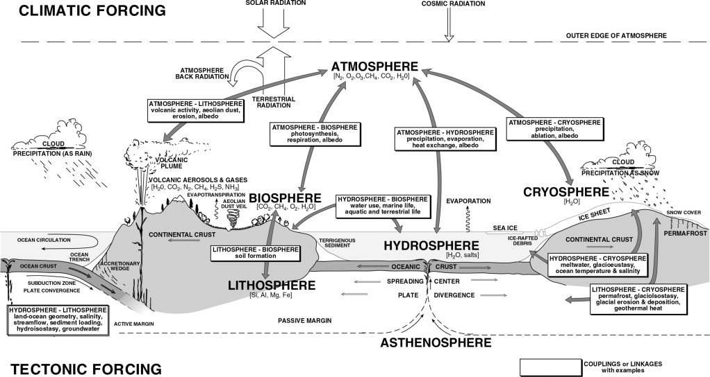

Conceptos fundamentales en Geomorfología#
En este módulo vamos a explorar las ideas centrales que nos permiten entender cómo se origina, evoluciona y se comporta el relieve terrestre. Estos conceptos son la base del pensamiento geomorfológico moderno.
Important
Objetivos de aprendizaje:
Comprender la interdependencia entre las escalas espaciales y temporales en los procesos geomorfológicos.
Diferenciar entre procesos modeladores endógenos (tectónica) y exógenos (clima).
Identificar la cuenca y el paisaje como sistemas abiertos en equilibrio dinámico.
Analizar la importancia de los umbrales y los mecanismos de retroalimentación en la evolución del relieve.
La Escala Espacial y Temporal#
Comprender los procesos y las formas del relieve geomorfológicas requiere considerar la vasta gama de escalas espaciales y temporales en las que operan. Los porcesos geomorfológicos senalan una correlación positiva entre espacio y tiempo: los fenómenos de mayor extensión espacial tienden a poseer una mayor duración.

Esta relación positiva se fundamenta en principios físicos de energía y momentum. Un proceso geomorfológico de mayor tamaño implica la movilización de una masa sustancialmente mayor, lo que a su vez requiere una cantidad de energía inicial (ya sea potencial, como en los deslizamientos, o de un forzamiento externo, como en las tormentas) de órdenes de magnitud superiores. Una vez que el proceso se desencadena, este sistema de gran masa posee una inercia y un momentum considerablemente más altos. En consecuencia, el tiempo necesario para disipar su enorme energía cinética a través de la fricción, la deformación interna y la resistencia del medio es proporcionalmente más largo. En esencia, la duración del evento no es más que el reflejo del tiempo que tarda el sistema en agotar su vasto presupuesto energético hasta alcanzar un nuevo estado de equilibrio, un proceso que se prolonga inevitablemente a medida que la escala espacial y la masa involucrada aumentan.
Procesos Modeladores del Paisaje#
El paisaje está gobernado por dos motores fundamentales: el forzamiento tectónico (endógeno), que genera el relieve primario a través de procesos como la subducción y la divergencia de placas, y el forzamiento climático (exógeno), impulsado por la radiación solar, que modula los procesos superficiales. La evolución del paisaje es el resultado emergente de una red compleja de acoplamientos y retroalimentaciones entre estos sistemas. La litosfera actúa como el sustrato fundamental, mientras que las demás esferas operan sobre ella como agentes de denudación y agradación, esculpiendo las geoformas a través de una cascada de procesos interconectados.
Procesos Difusivos en Laderas. El transporte función de la pendiente se considera difusivo porque la tasa de transporte depende del gradiente topográfico (la pendiente). Los procesos de tipo difusivo tienden a reducir el relieve y a rellenar las depresiones locales.
\(q_s=kS^n\)
Procesos Advectivos en Drenajes. Los procesos en los que el área de drenaje aguas arriba influye en las tasas de transporte de sedimentos se consideran advectivos, ya que el material arrastrado generalmente se mueve con flujos que aumentan su caudal aguas abajo. Los procesos advectivos tienden a generar incisión en los valles y a crear relieve:
\(q_s=kA^mS^n\)
Donde S es la pendiente local del cauce, A es el área de drenaje contribuyente que sirve como un indicador (proxy) del caudal local, K es una variable que incorpora factores dependientes del proceso de incisión, el sustrato, el clima y la hidrología, y m y n son constantes positivas que son función de la hidrología de la cuenca, la geometría del cauce y el proceso de incisión específico.
El Paisaje como un Sistema#
Para entender la complejidad del paisaje, no podemos mirar sus partes de forma aislada. Lo tratamos como un sistema abierto: un conjunto de componentes que interactúan y que intercambian energía y materia con su entorno.
{kind=link}

Fig. 1 Relación entre las escalas espaciales y temporales de los procesos geológicos.#
Equilibrio, Umbrales y Retroalimentación#
Equilibrio Dinámico: Imagina un río que fluye constantemente hacia un balde que, a su vez, tiene un agujero en el fondo. Si el caudal de agua que entra es exactamente igual al caudal que sale por el agujero, el nivel del agua dentro del balde permanecerá constante. El agua está en perpetuo movimiento (dinámico), pero la forma del sistema (el nivel del agua) no cambia (equilibrio). Esta es la idea intuitiva del concepto de equilibrio dinámico en geomorfología.
Técúnicamente, un paisaje se considera en equilibrio dinámico (o estado estacionario, steady-state) cuando la tasa de levantamiento tectónico (U), que añade masa y energía potencial al sistema, es igualada por la tasa de erosión o denudación (E), que remueve masa y disipa esa energía.
\(E=KA^mS^n\)
Por lo que, \(dz/dt=U-E\):
\(\frac{dz}{dt}=U-KA^mS^n\)
Y si, \(dz/dt=0\)
\(S=k_{sn}A^{-m/n}\)
El coeficiente \(k_{sn} =(E/K)^{1/n}\) se conoce como el índice de pendiente del drenaje (channel steepness index) y el exponente θ (m/n) como el índice de concavidad (channel concavity index).
No es un paisaje estático e inmutable, sino un sistema abierto con un flujo continuo de materia y energía, cuya forma se ha ajustado para que las entradas se equilibren perfectamente con las salidas. La consecuencia más importante de este concepto es que la topografía misma deja de ser una condición inicial para convertirse en una solución del sistema: la forma del paisaje es la expresión física de ese balance entre los forzamientos tectónicos y los procesos erosivos modelados por el clima.
Umbrales: un umbral geomorfológico es el límite que, una vez superado, provoca un cambio fundamental y a menudo abrupto en el estado o la dinámica de un sistema geomorfológico. Representa el punto en el que la resistencia interna del paisaje es superada por un forzamiento externo.
La clave del concepto es la respuesta no lineal: el paisaje puede absorber tensiones de forma gradual y sin cambios aparentes (un comportamiento lineal) hasta que alcanza el umbral. Al cruzarlo, la respuesta es desproporcionadamente grande y rápida, llevando al sistema a un nuevo estado morfológico. Por ejemplo, una ladera puede soportar años de infiltración de agua (forzamiento gradual), hasta que la presión de poros alcanza un valor crítico (el umbral) y se produce un deslizamiento masivo e instantáneo (ver {ref}sec-MenM). El sistema pasa de un estado “estable” a uno “inestable” y luego a un nuevo estado “estable” con una morfología completamente diferente.

Retroalimentación (Feedback): es el mecanismo por el cual el resultado de un proceso (el output) influye de vuelta sobre el propio proceso que lo generó (el input), ya sea para amplificarlo o para atenuarlo. Es la forma en que el paisaje se auto-regula o, por el contrario, se desestabiliza y cambia drásticamente.
Negativa (Estabilizadora): Aquí, el resultado de un proceso actúa para suprimir o contrarrestar el proceso original, empujando al sistema de vuelta hacia un estado de equilibrio. Es un ciclo de auto-regulación que busca la estabilidad.
Si un tramo de un río se vuelve demasiado empinado debido a un levantamiento tectónico, la velocidad del agua aumenta. Este aumento de velocidad incrementa la tasa de erosión en ese tramo. La erosión profundiza el cauce, lo que a su vez reduce la pendiente. El sistema se ajusta a sí mismo hasta que la pendiente es la justa para transportar su carga de agua y sedimento, alcanzando un perfil de equilibrio.
Positiva (Desestabilizadora): En este caso, un cambio inicial desencadena una serie de efectos que amplifican y refuerzan ese cambio original, llevando al sistema lejos de su estado de equilibrio y promoviendo una transformación rápida.
Un pequeño surco en una ladera (un rill) concentra el flujo de agua. Esta concentración aumenta la velocidad y la capacidad erosiva del agua, lo que hace que el surco se haga más profundo. Un surco más profundo es capaz de capturar aún más agua, lo que aumenta todavía más la erosión. El proceso se auto-acelera, transformando rápidamente un pequeño surco en una cárcava.

Frecuencia vs. Magnitud#
Existe una relación inversa entre el tamaño de un evento geomorfológico y la frecuencia con la que ocurre.
Los eventos pequeños y de baja energía (un sismo de baja magnitud) son extremadamente frecuentes y ocurren constantemente.
Los eventos catastróficos y de alta energía (un sismo de gran magnitud) son extraordinariamente raros.

Taller de Autoevaluación#
Relación Escala-Tiempo: Explique por qué un aluvión torrencial tiene una duración menor que la evolución de una cordillera, utilizando el concepto de presupuesto energético mencionado en el texto.
Procesos Difusivos vs. Advectivos: En una ladera tropical, identifique un proceso que se comporte de forma difusiva y otro de forma advectiva. ¿Cuál de ellos tiende a generar mayor incisión sobre el terreno?
Estado Estacionario: Si en una cuenca de los Andes colombianos la tasa de levantamiento tectónico es de 1 mm/año, ¿cuál debería ser la tasa de erosión para que el paisaje se encuentre en equilibrio dinámico? ¿Qué sucedería con la pendiente del cauce si el levantamiento aumenta a 2 mm/año?
Análisis de Caso (Retroalimentación): Describa el ciclo de retroalimentación positiva que ocurre durante la formación de una cárcava en un suelo desprotegido de vegetación.
Umbrales: ¿Cómo se aplica el concepto de umbral geomorfológico al trigger o detonante de un deslizamiento de tierra durante una tormenta intensa?